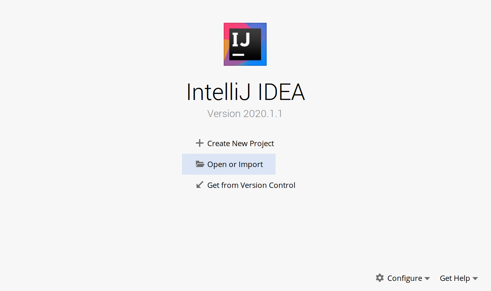
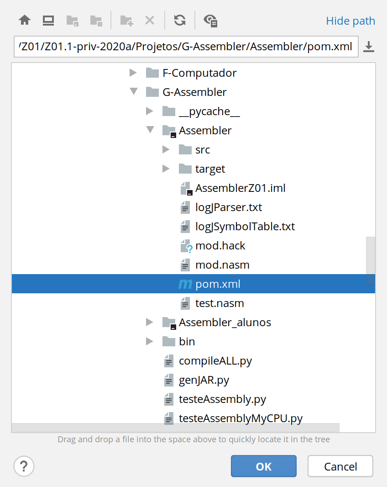
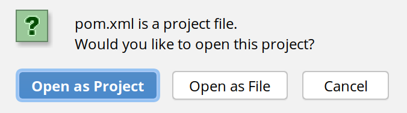
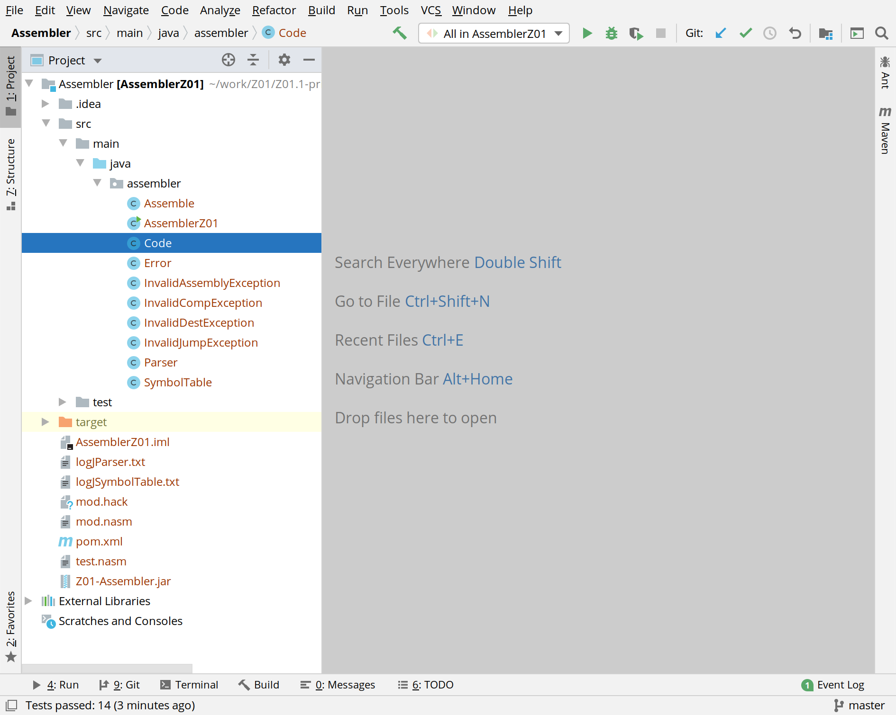
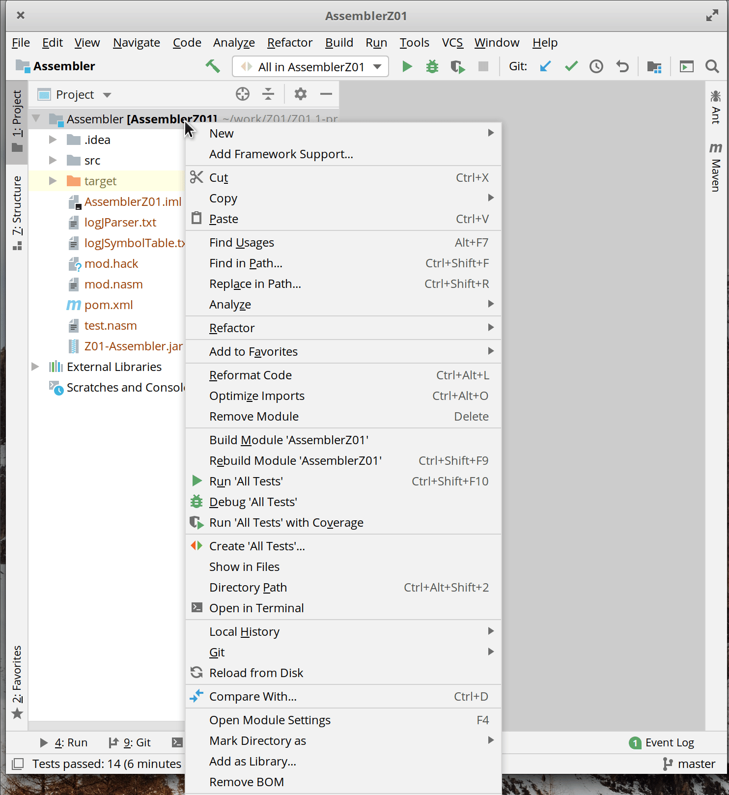
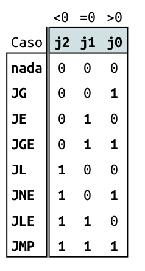
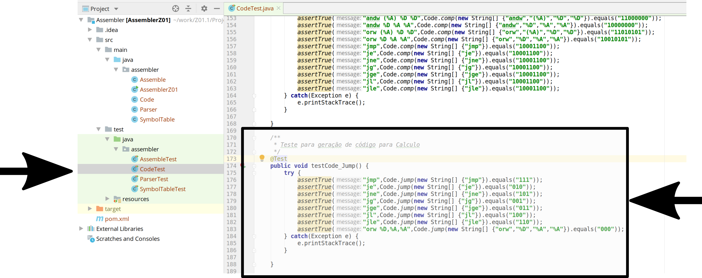
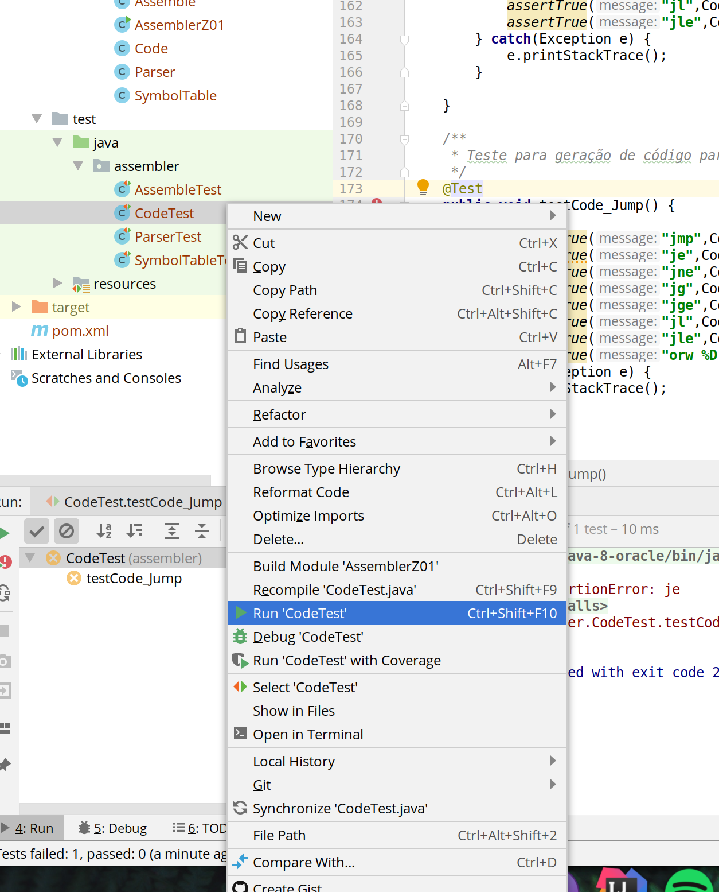
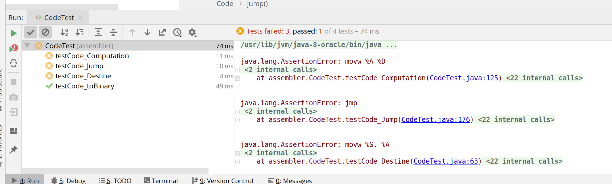
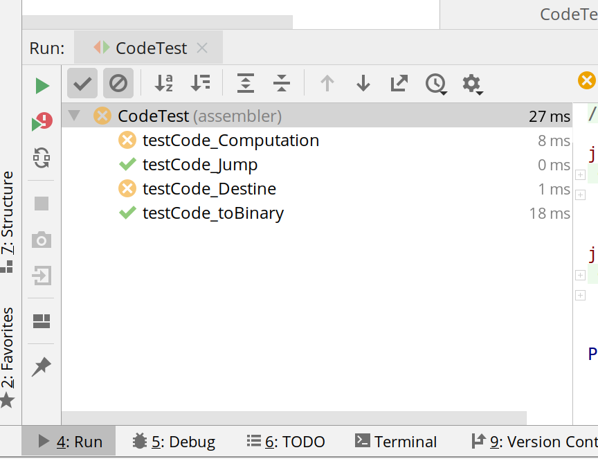

Lab 16: Assembler¶
Esse laboratório introduz uma série de conceitos e ferramentas e deve ser realizado individualmente ou em dupla (como indicado no começo de cada parte).
Ao final do laboratório você deverá:
- Entender o que é um arquivo
.hacke.mif - Ter um projeto importado no Intellij
- Ter o método
code.jumpimplementando - Saber como executar os testes unitários
- Ter o método
parser.commandTypeimplementando - Saber como extrair informações dos testes unitários
- Ter o
fillSymbolTable.initializeimplementando
Antes de começar¶
Toda vez que um novo projeto começar será necessário realizar algumas configurações no repositório do grupo, vocês devem seguir para o documento: Util/Começando novo Projeto e depois voltar para esse lab.
Progress
Próxima etapa ....
Agora iremos desenvolver um programa em java que será capaz de ler nossos programas .nasm e converter eles para .hack (binário). Nosso arquivo .hack é um arquivo de texto que possui apenas 1s e 0s. Cada linha desse arquivo .hack é uma instrução a ser armazenada na memória ROM e executado pela CPU.
Exemplo de um arquivo .hack:
000000000000000101
100101100000010000
000000000000000001
100000000000100000
000000000000001011
Você pode abrir seus arquivos .hack, para isso basta ir na pasta E-Assembly/bin/hack/ que vai encontrar seus binários (executáveis) do projeto E.
O arquivo .hack é um formato que não conseguimos fazer o download para a FPGA, então é necessário convertemos esse formato em um que o Quartus entenda. Esse formato do Quartus é chamado de .mif e é gerado automaticamente pelos scripts de teste, esse arquivo .mif é similar ao .hack salvo um cabeçalho e a indicação do endereço na qual a linha deve ser salva:
WIDTH=18;
DEPTH=5;
ADDRESS_RADIX=UNS;
DATA_RADIX=BIN;
CONTENT BEGIN
0 : 000000000000000101;
1 : 100101100000010000;
2 : 000000000000000001;
3 : 100000000000100000;
4 : 000000000000001011;
END;
Info
O Assembler de vocês deve gerar um arquivo .hack. A conversão para o .mif é feita pelos scripts em python já fornecidos (./testeAssembly.py)
assembler script python
.nasm ---------> .hack --------> .mif
v
|---------> FPGA
|---------> SIMULADOR
Assembler¶
O assembler será um programa escrito em java e que foi estruturado em quatro classes:
- Assemble
- Arquivo:
Assemble.java - Descrição: Classe responsável por criar o a de programar o Computador na FPGA e executarmos código de máquina, ela que efetivamente faz a varredura do arquivo
.nasmde entrada e escreve o arquivo.hackde saída, gerando o código de máquina. - Dependências:
Code.java,Parser.java,SymbolTable.java
- Arquivo:
- Code
- Arquivo :
Code.java - Descrição : Traduz mnemônicos da linguagem assembly para códigos binários da arquitetura Z0.
- Dependências : none
- Arquivo :
- Parser
- Arquivo :
Parser.java - Descrição : Encapsula o código de leitura. Carrega as instruções na linguagem assembly, analisa, e oferece acesso as partes da instrução (campos e símbolos). Além disso, remove todos os espaços em branco e comentários.
- Dependências : none
- Arquivo :
- SymbolTable
- Arquivo :
SymbolTable.java - Descrição : Mantém uma tabela com a correspondência entre os rótulos simbólicos e endereços numéricos de memória.
- Dependências : none
- Arquivo :
Note que o 'orquestrador' da montagem (esse é o termo em português utilizado) é a classe 'Assemble', nela que estará toda a lógica de montagem acessoada pelas demais classes.
Progress
Próxima etapa ....
Intelij¶
Agora vamos configurar a ide para podermos trabalhar no código java, siga para a próxima parte.
Warning
Todos devem realizar de forma individual!
Iremos realizar o desenvolvimento do Assembler na IDE do Intellij, para isso precisamos importar um projeto do tipo maven.
Import Project:¶

Importe o arquivo .mvn que está dentro da pasta G-Assebler/Assembler:


final¶
Você deve obter um projeto importado no intellij:

Verificando sdk¶
Verifique se o intellij associou um SDK ao projeto:

Próximos passos¶
Agora vamos começar a trabalhar no código java. Siga para a próxima parte.
Progress
Próxima etapa ....
Iremos agora implementar um dos métodos da classe Code, a parte responsável por gerar os três bits referentes ao jump:

No Intellij abra o código code.java e procure pelo método jump:
/**
* Retorna o código binário do mnemônico para realizar uma operação de jump (salto).
* @param mnemnonic vetor de mnemônicos "instrução" a ser analisada.
* @return Opcode (String de 3 bits) com código em linguagem de máquina para a instrução.
*/
public static String jump(String[] mnemnonic) {
return "";
}
Note que o input dessa função é um array de strings, chamado mnemnonic e seu retorno é uma string. No mnemnonic será passado a instrução a ser executada da seguinte forma:
{"jmp"}{"jge", "S"}{"jg", "%D"}- ...
E deve retornar o binário correspondente aos bits j2, j1 e j0 do comando de jump :
111,011,010, ....
Note que aesa classe não precisa se preocupar com a origem do jump (%S, %D, ...) apenas com o seu tipo
jmp,jge, ...
Implementando¶
Vamos implementar algo bem simples que está incompleto, mas vai servir para entendermos o fluxo. Modifique o código com o exemplo a seguir :
public static String jump(String[] mnemnonic) {
switch (mnemnonic[0]){
case "jmp" : return "111";
default : return "000";
}
}
Com a classe implementada, podemos executar o teste unitário dela.
No Intellij:

Com o botão direito no test/java/assembler/CodeTest

Note que o teste falhou, já que a nossa implementação está incompleta.

terminando¶
- Retorne a classe
jumpe termine sua implementação. - Execute novamente até o teste passar.
Antes de continuar
Termine de implementar essa classe

Progress
Próxima etapa ....
Desenvolvimento baseado em testes é uma técnica que temos utilizado até agora para os nosso projetos, nesse método fragmentando o desenvolvimento em pequenos módulos que são testados de forma individual, por testes unitários. O desenvolvimento é focado em fazer com que os módulos passem nos testes.
Como os testes não são perfeitos e não conseguem cobrir toda a funcionalidade do módulo, é necessário realizarmos o teste de integração, onde juntamos todas as peças e testamos o sistema como um todo.
Utilizaremos o mesmo recurso agora em java, onde cada módulo (método) possui um teste e quando todos os módulos estivem implementados e funcionando realizamos um teste de integração que valida tudo.
Os testes unitários foram feitos com o JUnit e estão na pasta do projeto: G-Assembler/Assembler/test/java/assembler. Os testes cobrem todas os métodos do projeto.
Exemplo parser¶
Os testes são uma guia do que cada método deve fazer, e eles servirão como complemento da documentação do módulo. Iremos seguir o fluxo:
- Ler descrição do método
- Abrir teste unitário e entender o que é passado e o que é esperado
- Desenvolver método
- Testar
- Falhou? Volte para 1.
Vamos pegar como exemplo o método commandType do parser:
/**
* Retorna o tipo da instrução passada no argumento:
* A_COMMAND para leaw, por exemplo leaw $1,%A
* L_COMMAND para labels, por exemplo Xyz: , onde Xyz é um símbolo.
* C_COMMAND para todos os outros comandos
* @param command instrução a ser analisada.
* @return o tipo da instrução.
*/
public CommandType commandType(String command) {
return null;
}
E seu teste unitário:
/**
* Teste para a instrução commandType
*/
@Test
public void testParser_commandType() {
try {
assertTrue("leaw $0,%A",parser.commandType("leaw $0,%A")==Parser.CommandType.A_COMMAND);
assertTrue("abc:",parser.commandType("abc:")==Parser.CommandType.L_COMMAND);
assertTrue("movw %A,%D",parser.commandType("movw %A,%D")==Parser.CommandType.C_COMMAND);
....
....
}
}
Vamos analisar o primeiro teste:
assertTrue("leaw $0,%A",parser.commandType("leaw $0,%A")==Parser.CommandType.A_COMMAND);`
- Nesse teste é passado a string
"leaw $0,%A"para o métodoparser.commandTypee esperasse na saídaA_COMMAND.
Com essa informação complementar conseguimos inciar o desenvolvimento dessa classe.
Antes de continuar
- Implemente a classe
parser.commandType - Execute o teste unitário do
parseraté que ocomandTypepasse nos testes.
Progress
Próxima etapa ....
Implemente o método initialize da classe SymbolTable utilizando os conceitos visto nos outros labs.
O initialize utiliza outros métodos dessa classe, edite eles:
public void addEntry(String symbol, int address) {
symbolTable.put(symbol, address);
}
public Boolean contains(String symbol) {
return symbolTable.containsKey(symbol);
}
public Integer getAddress(String symbol) {
return symbolTable.get(symbol);
}
Agora com os demais métodos implementando faça o initialize.
Tabela de símbolos? De uma lida na teoria/Tabela de Símbolos
Tip
Use os testes para ajudar entender o que o método faz.